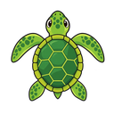

02 · CRIE
Rascunho local · demoMeu programa
Uma flor de possibilidades EXEMPLO
usar a cor o começo de tudo
repetir vezes
repetir vezes
↑ para frente
↱ girar à direita °
↱ girar à direita °
Combine passos pequenos. Crie coisas grandes.
LOGO Realce simulado · edição livre do rascunho
; Uma flor de possibilidades color [118 77 215] repeat 12 [ repeat 4 [ forward 100 right 90 ] right 30 ]
Seu código continua aqui.
Linha 1: “random” não tem equivalente nestes blocos. Continue no modo Código; o texto foi preservado.
Cenário simulado, sem parser ou conversor.Saída e histórico 0 mensagens
As mensagens do programa aparecerão aqui. Nesta prévia, nenhum comando é executado.
03 · DESCUBRA
Seu desenho

xy0, 0 Palco · 500 × 500Prévia ilustrativa
✦
O que acontece se você mudar
o ângulo da sua ideia?